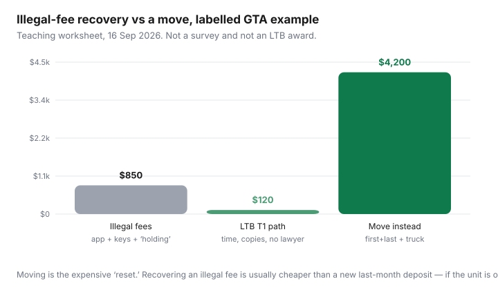

Housing · Canada
Ontario tenant fees cheat sheet: what’s legal, what’s not, and how to push back
Ontario listings still ask for “first and last plus a damage deposit,” a $75 application fee, or a “holding” cheque that is never applied to rent. Those phrases are so common they start to feel like the rules. They are not.
This is an Ontario Residential Tenancies Act (RTA) money checklist: last-month rent versus damage deposits, the short list of extra charges that Regulation 516/06 actually allows, application and holding fees that often cross the line, how interest on a rent deposit works at a high level, and how to document an overcharge without picking a fight you cannot finish. It is not legal advice and not a substitute for the Landlord and Tenant Board (LTB) or a licensed advisor. Rules on social housing, care homes, and some co-ops differ — read the statute for your building type.
Disclosure: There is no natural affiliate product in an illegal-fee checklist. Tenant-insurance comparison and rental-search platforms are optional offer types some households use after the lease is clean. Saving Optimizer may earn a commission if we later add those links. We do not invent partnerships. This guide works with ontario.ca and Tribunals Ontario forms.
Key takeaways
- For most private units, the only security deposit a landlord may collect is a rent deposit of up to one month (or one rental period, whichever is less) — used as last month’s rent, not for damage.
- Damage, pet, cleaning, and most “admin” deposits are offside. Application and credit-check fees charged to a prospective tenant are a common illegal ask.
- Lawful extras are a short list: refundable key/fob deposits at expected replacement cost, the bank’s actual NSF charge, and up to $20 NSF administration (O. Reg. 516/06, s. 17 — reviewed 16 Sep 2026).
- Landlords must pay annual interest on the rent deposit at the guideline in effect when payment is due — 2.1% for 2026 (ontario.ca rent-increase page).
- Recovering a few hundred dollars of illegal fees is usually cheaper than moving. An LTB T1 is the formal path; this article does not file it for you.
Last-month rent deposit vs damage deposits (high-level RTA rules)
The LTB’s public Guide to the Residential Tenancies Act (reviewed 16 Sep 2026) is blunt: a landlord can collect a rent deposit on or before the tenancy starts. If you pay monthly, it cannot be more than one month’s rent. It can only be used as rent for the last month (or week) before you leave. It cannot be used to repair damage.
That last sentence is the one Kijiji captions skip. A “damage deposit” by another name — pet deposit, cleaning deposit, “security” that the landlord will “inspect against” — is the thing section 105 is written to stop. Ontario is not British Columbia (where a security deposit up to half a month plus a separate pet-damage deposit can be lawful). Do not import a Vancouver listing’s fee stack into a Toronto lease.
Not legal advice: some buildings (care homes, certain co-ops, exempt tenancies) sit outside the usual RTA deposit rules. If your housing is rent-geared-to-income or you signed something that does not look like a standard residential lease, stop here and read the LTB guide for that housing type — or get advice.
First month’s rent in advance is rent, not a second deposit. “First and last” is the lawful pair when last means the rent deposit. “First, last, and a $1,000 damage hold” is the trio that should make you slow down.
Key deposits, NSF fees, and other common add-ons
Section 134 of the RTA is the general ban on extra fees, premiums, bonuses, penalties, and key deposits — whether or not refundable — unless a regulation carves them back in. O. Reg. 516/06, section 17 is that short list (public copy reviewed 16 Sep 2026):
| Ask | Usually | Why (high level) |
|---|---|---|
| Last-month rent deposit (≤ one period) | Lawful | RTA ss. 105–106 |
| Damage / pet / cleaning “security” | Offside for most units | Not on the s. 17 list |
| Refundable key/fob deposit ≤ replacement cost | Lawful | s. 17 para. 3 |
| Non-refundable “key money” | Offside | s. 134 names key deposits |
| Bank NSF charge passed through | Lawful | s. 17 para. 4 — actual bank fee |
| NSF administration | Cap $20 | s. 17 para. 5 |
| Application / credit-check fee | Usually offside | Prospective-tenant fee, not prescribed |
| “Holding” fee that is not applied to rent | Usually offside | Looks like a premium to secure the unit |
A $200 fob deposit on a $40 fob is not “expected direct replacement cost.” A $75 NSF “admin” on top of the bank’s $48 charge overshoots the $20 cap. Write the numbers on the lease margin before you sign, not after the e-transfer is gone.
Application and “holding” fees that often cross the line
Landlords may screen tenants. They may not, as a rule, make you pay for the privilege of being screened. A credit-check fee, “application processing,” or a non-refundable hold to “take it off the market” is the pattern ontario.ca’s rental-housing offences page is aimed at when it talks about extra fees and making someone buy something to secure a unit.
A holding payment that is clearly first month’s rent or the last-month deposit, receipted as such, is a different animal from a $500 “commitment fee” that vanishes if you do not get the unit — or if you do. If the listing will not put in writing that the money is rent or the lawful rent deposit, treat it as a walk-away signal, not a negotiation chip.
- Ask, in email: “Is this amount last-month rent under the RTA, first month’s rent, or something else?”
- Refuse cash. Get a receipt that names the statutory purpose.
- If they will not say, do not pay to stay in the running. The next listing is cheaper than an illegal fee you may never see again.
How interest on rent deposits works at a high level
The landlord must pay interest on the rent deposit every year. The LTB guide and RTA s. 106(6) set the rate equal to the rent-increase guideline in effect when the interest is due. Ontario’s public rent-increase page (reviewed 16 Sep 2026) sets the 2026 guideline at 2.1%. On a $2,400 last-month deposit, that is $50.40 for a 2026 interest year — not a rounding error over a five-year stay.
If the landlord does not pay, tenants are often told they may deduct the interest from rent or apply to the Board. That is a high-level reading of the public materials, not a how-to for your file. Keep the lease, the deposit receipt, and a one-line annual reminder in the same folder as your N1 notices.
When rent lawfully goes up, the landlord can usually ask you to top up the last-month deposit by the same dollar amount as the increase so the deposit still covers the last period. Interest you are owed can offset that top-up. Do the arithmetic on paper before you e-transfer “the difference.”
Documenting overcharges and polite recovery scripts
You do not need a speech. You need a paper trail.
- Save the listing, texts, and the clause that asked for the extra money. Screenshot dates.
- Pay lawful rent and the lawful rent deposit by a traceable method. Do not mix an illegal extra into the same e-transfer memo if you can avoid it.
- Email once, calm: “The RTA limits extra charges. Please confirm the $X application fee will be applied to first month’s rent or returned by [date]. I would like to proceed with the tenancy.”
- If you already paid, send the same email with the receipt attached and a deadline. BCC yourself.
- If they ignore you, the LTB T1 (rebate of money the landlord collected illegally) is the form the public materials point to — including for a prospective tenant who never got the unit. Deadlines exist; read the form. This is not a filing service.
Tone: “I think this is an RTA issue; happy to apply it to rent” gets money back more often than a lecture about section numbers. Save the section numbers for the application, if you file one.
When LTB processes enter the picture (overview, not legal advice)
The LTB is a tribunal, not a help desk. Public pages describe a T1 for money collected in contravention of the Act, and other applications for different problems (repairs, illegal charges during a tenancy, notices). Filing fees, fee waivers, and wait times change. None of that is a reason to skip the polite email, and none of it is a reason to stay in a unit that is unsafe.
If the dispute is really about a rent increase, start with rent-controlled versus exempt units and the official N1 — a fee fight is a different file from a guideline fight. If you are deciding whether to stay at all, rent-renewal negotiation is the money conversation; this cheat sheet is the “do not pay extra to exist here” conversation.
Savings math: recovering illegal fees vs moving costs

Labelled GTA example: $75 application + $400 “holding” that was not applied to rent + $200 extra keys on $40 fobs ≈ $850 gone. A local studio-to-one-bedroom move with a new last-month deposit can be several thousand dollars before you count time off work — see DIY versus movers. Paying $850 to “keep the peace” is only rational if you have already priced the move and still want this address.
Québec typically bans required security deposits; B.C. allows a security deposit up to half a month (plus pet-damage rules). If you are comparing cities, do not reuse this Ontario table. Cross-province shopping belongs in a different checklist; this one is RTA-shaped on purpose.
Sources & date stamps
- Tribunals Ontario, LTB brochure “A Guide to the Residential Tenancies Act” (English HTML, reviewed 16 Sep 2026) — rent deposits, interest, guideline, Nov. 15 2018 occupancy note.
- Residential Tenancies Act, 2006, S.O. 2006, c. 17, public copy on ontario.ca (ss. 105–106, 134–135) — reviewed 16 Sep 2026.
- O. Reg. 516/06, s. 17 — prescribed exemptions (keys, NSF, $20 admin) — reviewed 16 Sep 2026.
- ontario.ca, “Residential rent increases” — 2026 guideline 2.1% (page reviewed 16 Sep 2026).
- ontario.ca, “Rental housing offences” — extra fees and deposits, high-level (reviewed 16 Sep 2026).
Frequently asked questions
Can an Ontario landlord charge a damage deposit?
For most private residential units, no. The usual lawful deposit is last-month (or last-period) rent, which cannot be used to repair damage. This is education, not a ruling on your lease.
Are application or credit-check fees legal in Ontario?
They are commonly offside. The RTA bans extra fees from tenants and prospective tenants unless a regulation allows them, and application fees are not on that short list. Do not pay cash to ‘hold’ a unit without a receipt that names rent or the rent deposit.
What can a landlord charge if my rent cheque bounces?
The bank’s actual NSF charge to the landlord, plus an administration charge of no more than $20, under O. Reg. 516/06 s. 17 (reviewed 16 Sep 2026). A flat $75 ‘NSF fee’ that exceeds that math is the problem.
Do I get interest on last-month rent?
Yes, annually, at the rent-increase guideline in effect when the interest is due. For 2026 that guideline is 2.1% on ontario.ca’s public page. If it is not paid, public materials describe deduction or an LTB application — read the current form.
Should I move rather than fight an illegal fee?
Price both. Recovering a few hundred dollars is usually cheaper than a new last-month deposit plus moving. If the unit is unsafe or the landlord will not paper a lawful lease, moving can still be the cheaper life. Not legal advice.